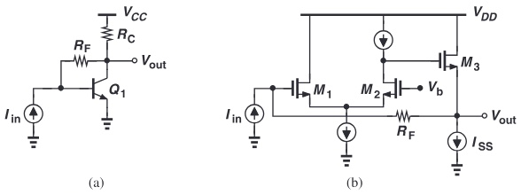

P1. R_F 귀환 증폭기 두 개(BJT, MOS)의 감지·반송 방식
주어진 조건
- 감지 방식: 출력 전압을 감지하는지(병렬) 출력 전류를 감지하는지(직렬), 반송 방식: 입력에 전압으로 반송하는지(직렬) 전류로 반송하는지(병렬)를 가림
구할 것
- (a), (b) 각 증폭기의 감지 방식과 반송 방식

원문 보기
Identify the sense and return mechanisms in each amplifier depicted in Fig. 12.88.
문제를 읽어요
두 회로 모두 입력은 전류원 $I_{in}$이고 출력은 오른쪽 $V_{out}$ 단자예요.
두 회로 모두 출력 쪽과 입력 쪽 사이에 저항 $R_F$ 하나가 걸려 있어요. 이 $R_F$가 출력을 입력으로 되돌리는 귀환 회로망(feedback network)이에요.
(a)는 BJT $Q_1$ 공통 이미터(CE) 단에 컬렉터 부하 $R_C$를 단 한 단 증폭기예요. (b)는 차동쌍 $M_1$–$M_2$(꼬리 전류원, 위쪽 전류원 부하)와 소스 팔로워 $M_3$(아래 $I_{SS}$)으로 된 두 단 증폭기예요.
구할 것은 숫자가 아니에요. 각 회로에서 $R_F$가 출력의 무엇(전압 또는 전류)을 감지(sense)하고, 입력에 무엇(전압 또는 전류)으로 반송(return)하는지 가려요. 귀환의 극성(부귀환·정귀환)은 묻지 않아요.
이 개념과 공식을 떠올려요
단서: 출력 노드와 입력 노드 사이에 소자 하나($R_F$)가 다리처럼 걸려 있다는 그림이 "감지와 반송 방식(sense and return mechanisms)"을 떠올리게 해요.
감지 개념: 전압은 두 노드 사이에 병렬로 대서 재요(볼트미터). 그래서 전압을 감지하는 귀환 회로망은 출력과 병렬로 나타나요. 전류는 도선을 끊고 직렬로 넣어 재요(커런트 미터). 그래서 전류를 감지하는 귀환 회로망은 출력 전류 경로와 직렬로 나타나요.
반송 개념: 전압 두 개를 더하거나 빼려면 직렬로 이어요. 그래서 전압을 반송하면 입력 신호와 직렬로, 예를 들어 차동쌍의 다른 게이트나 소스/이미터 쪽에 들어가요.
전류 두 개를 더하거나 빼려면 같은 노드에 병렬로 붙여요. 그래서 전류를 반송하면 입력 신호원과 같은 노드에 병렬로 붙고, 그 노드의 KCL에서 오차 전류가 다음처럼 생겨요.
$$i_e=i_{in}-i_F$$기호의 뜻: $i_{in}$은 입력 전류원이 노드에 넣는 전류, $i_F$는 귀환 회로망이 그 노드에서 빼 가는 전류, $i_e$는 남아서 순방향 증폭기로 들어가는 오차 전류예요.
이상적 조건: 전압을 감지하는 귀환 회로망의 입력 임피던스는 $\infty$, 전류를 반송하는 귀환 회로망의 출력 임피던스는 $\infty$여야 해요. 저항 $R_F$를 충분히 크게 잡으면 출력에서 보면 볼트미터처럼, 입력에서 보면 전류원처럼 동작한다고 근사해요(큰 저항으로 전류 빼기, 감지 쪽 임피던스, 반송 쪽 임피던스).
선택 이유: 이 문제는 계산이 아니라 연결의 분류예요. 그래서 소신호 등가회로나 $G_m$·$R_{out}$을 구하지 않고, 귀환 소자의 두 끝이 각각 어디에 어떻게 붙는지만 읽으면 돼요. 이름은 감지-반송 순서로 붙여요(네 가지 귀환 형태).
종이에 쓸 첫 줄
각 회로에서 $R_F$의 두 끝을 따로 보고, 끝마다 질문 하나씩 적어요.
출력 쪽 끝: $R_F$를 붙이려고 출력 전류가 흐르는 도선을 끊었나요? 끊지 않고 출력 노드에 달기만 했으면 병렬, 즉 출력 전압 감지예요. 출력 전류 경로 안에 직렬로 끼었으면 출력 전류 감지예요.
입력 쪽 끝: $R_F$가 입력 신호원과 같은 노드에 붙어 KCL로 합쳐지나요? 그렇다면 병렬, 즉 전류 반송이에요. 입력 신호원과 직렬인 다른 단자(차동쌍의 반대 게이트, 소스/이미터 등)에 들어가 전압으로 빼지면 전압 반송이에요.
이렇게 풀어요
(a) BJT 단: 출력 노드 $V_{out}$은 $R_C$ 아래 끝, $Q_1$ 컬렉터, $R_F$ 오른쪽 끝, 출력 단자가 만나는 한 점이에요.
$R_F$는 이 노드에 붙어 있을 뿐, $R_C$에서 $Q_1$ 컬렉터로 내려가는 전류 경로를 끊고 들어가지 않아요. 그래서 $R_F$는 출력과 병렬이고 출력 전압 $V_{out}$을 감지해요.
$R_F$의 왼쪽 끝은 $Q_1$ 베이스 노드에 붙고, 입력 전류원 $I_{in}$도 같은 베이스 노드에 붙어요. 두 전류가 한 노드에서 만나므로 $R_F$는 입력과 병렬이고 전류를 반송해요.
베이스 노드의 KCL로 쓰면 $Q_1$로 들어가는 오차 전류는 입력 전류에서 $R_F$가 빼 가는 전류를 뺀 값이에요.
$$i_e=I_{in}-i_F$$따라서 (a)는 출력 전압을 감지해 입력에 전류로 반송하는 전압-전류 귀환(voltage-current feedback)이에요.
(b) MOS 두 단: 출력 노드 $V_{out}$은 $M_3$ 소스, 아래 $I_{SS}$, $R_F$ 오른쪽 끝, 출력 단자가 만나는 한 점이에요.
$R_F$는 $M_3$에서 $I_{SS}$로 흐르는 출력 경로를 끊지 않고 이 노드에 달려 있어요. 그래서 $R_F$는 출력과 병렬이고 출력 전압 $V_{out}$을 감지해요.
$R_F$의 왼쪽 끝은 아래로 내려온 긴 도선을 따라 $M_1$ 게이트 노드까지 올라가요. 이 노드에는 입력 전류원 $I_{in}$도 붙어 있어요. 그래서 $R_F$는 입력과 병렬이고 전류를 반송해요.
그 긴 도선은 $M_1$·$M_2$ 소스 노드에서 꼬리 전류원으로 내려가는 세로선과 점 없이 교차해요. 점이 없으니 연결이 아니고, $R_F$는 소스 노드에 들어가지 않아요.
$M_2$ 게이트는 고정 바이어스 $V_b$에 있어서 귀환 신호가 들어가는 곳이 아니에요. 입력 노드의 KCL은 (a)와 같은 꼴이에요.
$$i_e=I_{in}-i_F$$따라서 (b)도 출력 전압을 감지해 입력에 전류로 반송하는 전압-전류 귀환이에요.
완성 답과 검산
| 회로 | 감지 | 반송 | 귀환 형태 |
|---|---|---|---|
| (a) BJT CE 단 | 출력 전압 (출력과 병렬) | 전류 (입력과 병렬) | 전압-전류 귀환 |
| (b) 차동쌍 + 소스 팔로워 | 출력 전압 (출력과 병렬) | 전류 (입력과 병렬) | 전압-전류 귀환 |
두 회로 모두 출력 전압을 감지해 입력에 전류로 반송해요. 조건: $R_F$가 출력 노드와 입력 노드 사이에 직접 걸리고, (b)의 $R_F$ 도선이 소스 노드와 점 없이 교차할 뿐 연결되지 않아요.
임피던스로 다시 확인: 출력 쪽에서 귀환 회로망을 들여다보면 $R_F$를 거쳐야 하므로, $R_F$가 크면 입력 임피던스가 커서 볼트미터처럼 전압 감지에 맞아요. 입력 노드 쪽에서 들여다봐도 $R_F$가 크면 출력 임피던스가 커서 전류원처럼 전류 반송에 맞아요. 두 판정이 연결로 읽은 결과와 같아요.
입출력 짝 확인: 두 회로 모두 입력이 전류 $I_{in}$, 출력이 전압 $V_{out}$이에요. 전류를 받아 전압을 내는 증폭기(트랜스임피던스 증폭기)에는 전압을 감지해 전류를 빼는 전압-전류 귀환이 맞는 짝이라, 결과가 신호 종류와도 일관돼요.
단위 확인: 귀환 회로망이 전압 $V_{out}$을 받아 전류 $i_F$를 내므로 귀환율 $K=i_F/V_{out}$의 단위는 S예요. 저항 $R_F$ 하나가 전압을 전류로 바꿀 때의 비가 $1/R_F$ 규모라는 것과 차원이 맞아요.
주의할 점
- (b)에서 $R_F$ 도선이 꼬리 전류원 쪽 세로선을 지나는 곳을 접속으로 읽으면 "소스 노드에 전압으로 반송"이라는 틀린 답이 나와요. 교차에 점이 없으면 연결이 아니에요.
- 병렬·직렬은 그림에서 소자가 나란히 보이느냐가 아니라, 출력 전류 경로를 끊었는지(감지)와 입력 신호와 같은 노드에서 합쳐지는지(반송)로 정해요.
- 감지는 귀환 회로망의 입력 임피던스(전압 감지 $\infty$, 전류 감지 0)로, 반송은 출력 임피던스(전압 반송 0, 전류 반송 $\infty$)로 따져요. 감지와 반송의 임피던스 조건을 서로 바꿔 쓰지 않아요.
- 감지·반송의 분류는 귀환의 극성과 별개예요. 이 문제는 연결 방식만 묻고, 부귀환인지는 입력 변화를 루프를 따라 추적하는 별도 절차로 판단해요.
- 이름은 감지-반송 순서예요. 출력 전압 감지·입력 전류 반송을 "전류-전압 귀환"으로 뒤집어 부르지 않아요.
조건을 바꾸어 생각해요
- 입력이 전압원 $v_{in}$이고 차동쌍 $M_1$ 게이트로 들어가며, 출력 노드와 접지 사이의 저항 분배기 $R_1$–$R_2$ 중간점 $v_F$가 $M_2$ 게이트로 간다면 감지와 반송은 각각 무엇이고 귀환 이름은 무엇인가요?
- (a)에서 $R_F$의 오른쪽 끝을 컬렉터 대신, $Q_1$ 이미터와 접지 사이에 새로 넣은 작은 저항 $R_S$의 위쪽 끝(이미터 노드)으로 옮기고 왼쪽 끝은 베이스 입력 노드에 그대로 둔다면 감지 방식은 무엇으로 바뀌나요?
- (a)에서 $I_{in}$이 조금 늘었다고 할 때, 베이스 전압 → 컬렉터 전류 → $V_{out}$ → $R_F$로 빠지는 전류 순서로 따라가면 귀환이 원래 변화를 돕나요, 방해하나요?
두 회로 모두 $R_F$가 출력 전압을 감지해 입력에 전류로 반송하는 전압-전류 귀환이에요.
판별 기준
출력 전류 경로를 끊지 않고 출력 노드에 달리면 병렬이라 전압 감지예요.
입력 전류원과 같은 노드에 붙어 KCL로 합쳐지면 병렬이라 전류 반송이에요.
입력 노드에서 $i_e=I_{in}-i_F$로 전류가 빼져요.
그림 읽기
(b)의 $R_F$ 도선은 소스 노드 세로선과 점 없이 교차할 뿐 연결되지 않아요.